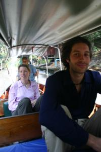
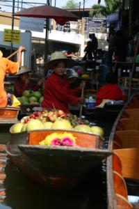
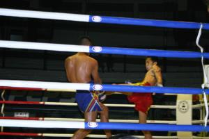

Le 26 décembre 2004,
 Réveillés dès l’aube ce matin (bon d’accord, à 7 heures, il fait déjà jour...), nous partons tous les trois en bus pour rejoindre le marche flottant de Damnoen Saduak. Ces deux heures de bus nous permettent de finir notre nuit et c’est l’hôtesse du bus qui est obligée de nous réveiller pour nous indiquer notre arrêt. Heureusement que c’est le terminus ! Nous ne sommes plus que trois dans le bus... Arrivés à l’embarcadère, nous négocions un bateau pour nous emmener jusqu’au marché flottant et nous balader un peu dans les canaux aux alentours. La traversée dure à peu près 2 heures et nous avons le temps d’apprécier pleinement le spectacle.
Des dizaines de gondoles se pressent les unes contre les autres et chacune essaie de vendre sa marchandise à la voisine. C’est un véritable marché ambulant... On nous retient la gondole au passage afin de nous proposer de la nourriture, des vêtements, des bibelots... C’est incroyable ! Il est presque midi et il commence à se faire faim. Nous profitons alors de ce panaché de brochettes, riz, nouilles sautées et fruits a portée de main pour nous concocter un véritable festin ! Il suffit de choisir et de tendre la main pour nous substanter à volonté ! 
Nous continuons notre route par un coin plus tranquille. A un moment donné, le batelier s’arrête et nous donne un paquet de graines à jeter dans l’eau du canal. Aussitôt, des milliers de poissons se bousculent pour attraper la nourriture jetée. C’est vraiment impressionnant de voir cette quantité de poissons se jeter les uns sur les autres dans un mouvement frénétique de nageoires. Le marché se finit, il est temps de rentrer. Heureusement que nous n’avons pas écouté Michael qui ne voulait pas se lever tôt ce matin et ne venir au marché que l’après-midi !!! En tous cas, ce tour en gondole nous aura vraiment bien plu !
Comme il n’est pas trop tard, nous partons en bus pour Nakhon Pathom qui serait la plus ancienne cité de Thaïlande et qui renfermerait le plus haut monument bouddhique au monde (127 mètres). C’est très impressionnant ! Une petite heure de bus plus tard et nous revoilà dans notre rue touristique préférée ! Nous quittons alors Gaëlle qui part sur Chiang Mai passer quelques jours en compagnie des éléphants. Bisous Gaëlle et bonne route !
 Pour notre part, nous finissons la soirée par un match de boxe thaïlandaise pas trop à mon goût, je dois bien le dire... C’est vraiment pour faire plaisir à Michael ! Nous prenons des places juste à coté du ring, histoire de ne pas louper le sang qui gicle... Le match commence par un hommage à l’hymne national et les premiers combattants arrivent sur le ring. Je suis stupéfaite de voir monter deux gamins d’à peine 16 ans ! Après une courte cérémonie accompagnée de musique assez stridente, le combat commence. Dans ce sport de combat, tous les coups sont permis, à part les coups de tête. Autant dire que c’est super violent ! Il y a 5 rounds de 2 ou 3 minutes selon l’ancienneté des combattants et si les deux sont encore debout a la fin des 5 rounds, le gagnant est celui qui a donné le plus de coups a l’autre.
Le premier affrontement se termine au 4eme round avec une côte cassée... La civière débarque aussitôt. Un autre se termine dès le 1er round à cause d’un coup de poing mal placé qui l’a carrément assommé... Le pauvre ! La seule chose marrante à voir, c’est les spectateurs qui parient sur l’un des combattants et qui hurlent de façon hystérique depuis les gradins, la figure rouge et défigurée, pour encourager leur favori ! Nous partons avant la fin (heureusement, ça dure 5 heures...) contents d’en avoir fait l’expérience, mais sans l’intention de récidiver !
Eve-Laure
Depuis que nous nous sommes rencontrés à Jodhpur, nous vous suivons régulèrement . Nous espèrons que vous allez bien, à lire vos récits votre voyage à l’air de bien se passer ; Courage à tous les deux car les événements de ces derniers jours ne doivent pas être faciles a digérer malgré le fait que vous ne soyez pas toucher par cette catastrophe.
A bientot Amélie et Amaury
{kind=link}
{kind=link}
{kind=link}